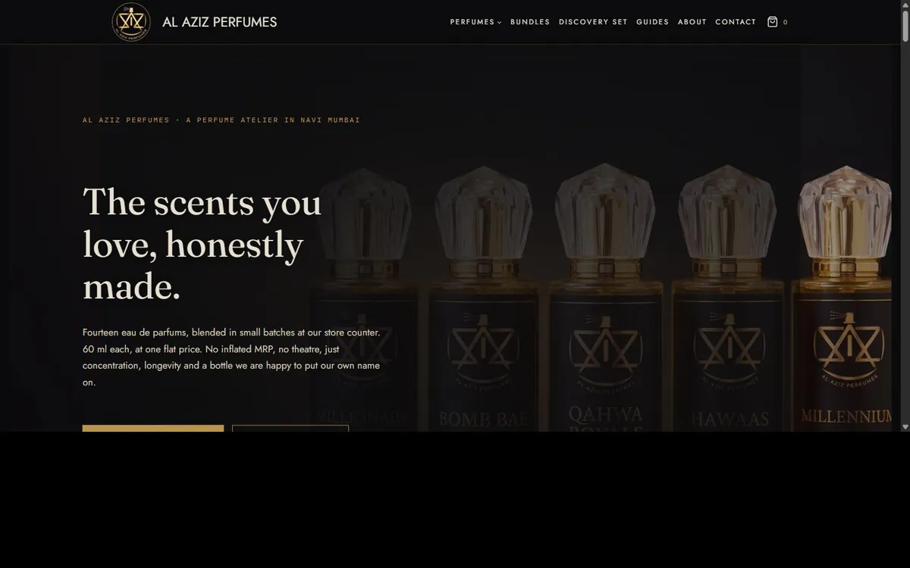

Performance marketing and ecommerce analytics for D2C brands. Most stores we open are optimising ad spend against numbers that were never wired up correctly. That is usually the first thing worth fixing, and it is rarely the thing anyone is selling you.
The loop
This is the shape of every engagement, whether the deliverable this month is a campaign, a storefront or a tracking fix. Skip a stage and the next one gets more expensive to run.
Meta and Google, run against a break-even ROAS derived from the margins, not an industry average.
Storefront and checkout built to take the order without friction — catalogue, pricing architecture, guest checkout, payment gateway.
GA4, Tag Manager and Meta Pixel reconciled against the payment gateway, because a Pixel that fires is not the same as a Pixel that is correct.
Post-purchase sequences and pricing that make the second order cheaper to win than the first.
Contribution margin gets reinvested into acquisition, and the same loop runs faster the next time round.
Selected work

A single-store perfume retailer in Navi Mumbai with no online presence. We took the whole thing: storefront, pricing, acquisition plan and reporting — one team, start to finish.
The positioning came out of the benchmark rather than a brainstorm. Fourteen eau de parfums at one flat price, no inflated MRP, no theatre. In a category built on discounting off an imaginary list price, refusing to play that game is the differentiation.
WooCommerce end to end. Fourteen-SKU catalogue, pricing architecture, guest checkout and Razorpay integration. Live and taking orders.
GA4, Google Tag Manager and Meta Pixel with Conversions API. Purchase events reconciled against the payment gateway rather than assumed, because a Pixel that fires is not the same as a Pixel that is correct.
A GST-corrected unit model set the ₹799 launch price at 55% contribution margin and a 1.83x break-even ROAS. Two- and three-bottle bundles lift contribution per order to ₹786 and ₹1,136 without raising acquisition cost.
Four competing fragrance brands compared on price per ml, AOV and positioning. That set the price band and pointed to a craftsman-perfumer story rather than another discount-led entrant.
A ₹15,000 per month Meta budget structured against category benchmarks, fronted by a ₹599 discovery-set offer with a coupon-driven trial-to-full-bottle funnel.
Prepaid-only at launch, removing roughly ₹140 of loss per failed delivery, plus a seven-touch WhatsApp post-purchase sequence to make the second order cheaper than the first.
Where this stands. The store is live and the campaign is running. Spend is still accumulating, so there is no ROAS figure on this page yet. When there is one it goes here whether or not it flatters us. Numbers you cannot check are worth nothing, and most of the ones on sites like this are exactly that.
What we do
GA4, Google Tag Manager, Meta Pixel with Conversions API. Purchase events, revenue values, deduplication, and a reconciliation against what the payment gateway actually recorded.
WooCommerce and WordPress, front and back. Catalogue, pricing, checkout flow, payment gateway, and the logistics decisions that quietly determine whether the unit economics survive contact with reality.
Meta and Google. Campaign structure, creative testing, budget allocation and offer construction, run against a break-even ROAS derived from your margins rather than an industry average.
CAC, AOV, contribution margin, break-even ROAS, and a Power BI or GA4 view a founder can read in ninety seconds without a translator.
How we work
The order matters. Spend optimising toward broken events does not merely waste budget, it teaches the algorithm the wrong lesson and the damage compounds. So measurement gets fixed first, every time, including the engagements where it is the least interesting part of the work.
We came to this from sales rather than from design, which means we think in contribution margin before we think in creative. We would rather show you a pricing model than a mood board. If the number does not move, it was decoration.
We work with a small number of brands at a time and we document what we learn in public, including the parts that did not work. There is a great deal of confident nonsense in this field and most of it is generated rather than earned.
Contact